Sobre Mim
Sou graduado em ADS pela Unicid e atualmente estou cursando licenciatura em física na UFSC.
Comecei minha jornada em TI durante o ensino médio, iniciei com a plataforma OutSystems e com ela consegui os primeiros freelancers. Já em 2021 me apaixonei por ciência de dados, desde então, tenho focado minha energia e meu tempo em projetos para resolver desafios de negócios usando conceitos e ferramentas de ciência de dados.
Atualmente trabalho na Somativa como arquiteto de soluções e como monitor de ciência de dados na Comunidade Ds para evoluir minhas hard e soft skills.
Habilidades Técnicas
Data Extraction, Storage, Processing & Orchestration
- SQL, SQL Server, Postgres, MySQL, SQLite;
- Elasticsearch, Logstash;
- MongoDB;
- Talend;
- Python;
- Spark (PySpark API);
- Apache Airflow, Prefect, Rundeck.
Statistics and Data Visualization
- Descriptive statistics, Cohort analysis & Inferential statistics;
- Matplotlib, Seaborn, Plotly;
- Streamlit, Metabase, Kibana.
Machine Learning
- Data cleaning, feature engineering, data preparation, dimensionality reduction, addressing class imbalance, feature selection & transferlearning;
- Classification, Regression, Clustering, Learn-to-rank & Time series;
- Performance metrics para avaliação & Tuning.
Deployment & Dev Tools
- Git, Github and Gitlab;
- Linux;
- Docker base solutions
- Flask & Starlette / FastAPI;
- MediaFire, Render, Heroku, Aws, Gcp & Streamlit Cloud;
- Telegram, Discord & Google Sheets;
- OutSystems, Django, PyGUI, PyScript.
Projetos de Data Science
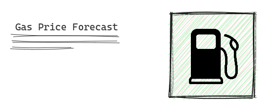
Trucks Inc é um marketplace onde a empresa reúne caminhoneiros autônomos e caminhoneiros terceirizados com outras empresas que necessitam de caminhoneiro. (Mais detalhes sobre o problema na descrição do projeto).
É preciso ampliar a campanha de marketing para aquisição de novos caminhoneiros autônomos, uma das hipóteses levantadas por o Chefe de Marketing deveria usar o preço da gasolina como incentivo para atrair a atenção dos caminhoneiros, mas o Chefe precisa de uma prévia do preço da gasolina no futuro para selecionar o melhor momento de mercado para fazer esse incentivo.
Ferramentas:
- Séries Temporais;
- Nixtla;
- Databricks;
- Aws;
- Terraform;
- Mlflow.
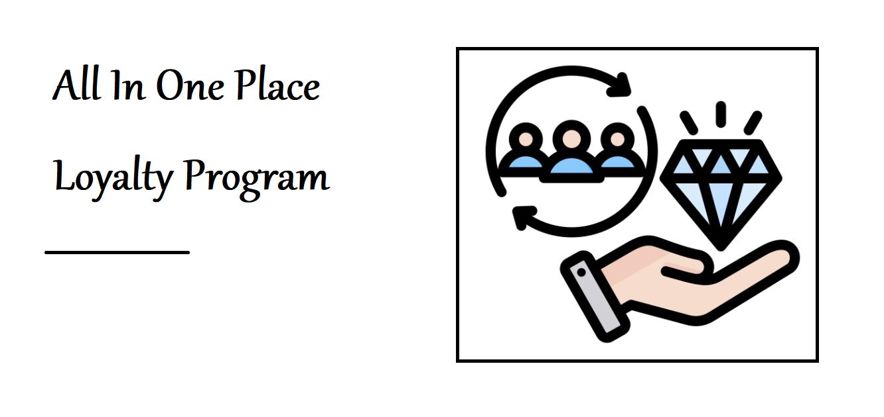
All In One Place é um e-commerce geral que vende diversos produtos. Com base nesse cenário, a equipe de marketing precisa ter um conhecimento profundo de todos os clientes, a equipe precisa selecionar clientes em potencial para um programa de fidelidade com base no hábito de compra dos clientes.
Com a conclusão da entrega, foi encontrado um grupo de clientes altamente valiosos, que baseado no levantamento das hipóteses e análises foi selecionado como "o grupo insiders".
Ferramentas:
- Clusterização;
- Séries Temporais;
- Estudo do espaço de Embedding;
- Análise de Cohort;
- Análise de Cluster;
- Papermill;
- MongoDB;
- SQL Server;
- Metabase;
- Docker
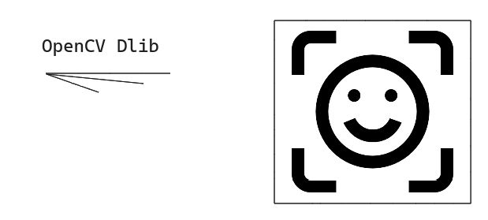
Este projeto tem uma ideia muito simples. Basicamente consiste em uma câmera detectando o rosto das pessoas usando o yunet, depois disso a imagem é processada para que o embedding seja coletado com Dlib, e esse vetor de embedding de 128 posições é armazenado em um documento no Elasticsearch para consulta rápida/similaridade de rostos posteriormente. A ideia de usar c++ era testar o potencial da ferramenta.
Essa solução irá implementar todas as caixinhas para visão computacional, posteriormente poderiamos utilizar essa mesma ferramenta para diversas outras aplicações.
Ferramentas:
- C++;
- CMake;
- Elasticsearch;
- OpenCV
- Dlib;
- Face Embedding;
- Face Similarity / Distance;
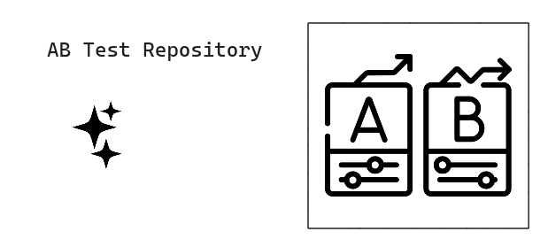
Repositório para use cases resolvidos com Teste A/B, Teste A/B/n e teste A/B Bayesiano.
Nesse repositório contem os três use cases utilizando inferência frequentista e bayesiana a fim de solucionar alguns clássicos problemas, estudei bastante sobre as formulas de todos os possíveis cenários do sample size para Inferência frequentista, foi utilizado use cases de conversão de página (A/B), conversão de botões das páginas da universidade de montana (A/B/n) e taxa de conversão de botões utilizando Inferência bayesiana.
Encontrei limitações em implementações da linguagem python que não estavam batendo com as formulas do livre de cohen de 1988.
Ferramentas:
- Inferência Frequentista;
- Inferência Bayesiana;
- The Sample Size formulas;
A Blocker Fraud Company é uma empresa especializada na detecção de fraudes em transações financeiras realizadas por meio de dispositivos móveis que esta com agressivas expensões para o Brasil com diversos benefícios a os clientes da empresa. A empresa possui um serviço chamado "Blocker Fraud" com garantia de bloqueio de transações fraudulentas. Você foi contratado por uma consultoria DS para criar um modelo altamente preciso para detecção de fraudes em transações por meio de dispositivos móveis.
Com a conclusão da entrega, a empresa irá salvar um total de R$ +/- 11.996.415.433,55 levando em conta a detecção *apenas* das fraudes que já foram catalogadas no dataset!!
Ferramentas:
- Classificação;
- Workload Batch + Near Real Time;
- Threshold Checkout;
- XGB Fine Tuning;
- PySpark;
- Airflow;
- MinIO;
- Streamlit;
- Docker;
O objetivo é prever onde um novo usuário reservará sua primeira experiência de viagem, assim o Airbnb pode compartilhar conteúdo mais personalizado com sua comunidade se saber precisamente para onde as viagens estão reservadas para essas comunidades ou usuários da plataforma, pode também diminuir o tempo médio para a primeira reserva e prever melhor a demanda em outros locais, tudo isso com essa nova ferramenta.
Após as devidas análises da segunda entrega da solução seguindo a metodologia do CRISP, a classe de passageiros que não iria realizar nenhuma viagem foi de 100% de acurácia reduzindo muito os investimentos de marketing para usuários específicos, para as demais classes teve uma acurácia exponencial para as classificações.
Ferramentas:
- Classificação Multiclasse;
- Intervalos de Confiança de Estimadores com Bootstrap;
- Estudo do Espaço de Embedding;
- Imbalance Learning Preprocessing;
- Flask Api;
- Heroku;
- Google Sheets;
A CCD é uma empresa especializada na detecção de doenças cardíacas em estágio inicial, o diagnóstico de uma doença cardiovascular é feito manualmente por uma equipe de especialistas e a precisão atual do diagnóstico varia entre 55% e 65%, devido à complexidade do diagnóstico e também para o cansaço da equipe. O Objetivo é construir uma nova ferramenta para auxiliar a equipe neste diagnóstico.
Com essa nova solução as detecções de doenças cardiovascular foram extremamente mais precisas indicando um faturamente +/- R$ 1,374,120.00 no pior dos senários desenvolvidos, já o intervalo de confiança das previsões varia entre +/- 75%, assim com a ajuda da solução e a expertize da equipe essas doenças podem ser diagnosticadas mais precisamente.
Ferramentas:
- Classificação;
- Intervalos de Confiança de Estimadores com Bootstrap;
- Curvas de Calibração de Estimadores;
- Estudo do Espaço de Embedding;
- Flask Api;
- Heroku;
- Google Sheets;
O CEO da empresa Fruits House solicitou forma científica para classificar frutas, A Fruits House é uma distribuidora de frutas e verduras no sul do Brasil. A ideia inicial do CEO era colocar essa solução em um drone que iria percorrer as colheitas e classificar as devidas frutas para coletar apenas as devidas frutas utilizando um drone simples.
A Solução foi disposta em um simples app no streamlit para testar as imagens.
Ferramentas:
- Classificação Multiclasse;
- Convolutional Neural Nets para classificação de Frutas;
- Dataset Augmentation;
- Streamlit;
O CFO solicita previsão de vendas para futuras inovações e melhorias de todas as Lojas Farmacêuticas, a Rossmann é uma rede de drogarias da Europa que concentra suas vendas na Alemanha.
Com a conclusão da primeira entrega, o CFO consegue ver as previsões de vendas de cada uma das +3.000 lojas pelo seu celular assim consegue gerar insight's rapidamente das previsões.
Ferramentas:
- Regressão Para Time Series;
- XGB & MLP para Regressão;
- Flask Api;
- Heroku;
- Telegram App;
O CEO solicitou uma forma mais científica de avaliar o preço para o ano de 2010 de suas propriedades distribuidas ao longo dos estados dos Estados Unidos.
Após a conclusão da primeira entrega, foi iniciado o segundo ciclo do CRISP a fim de obter resultados mais acurádos, com um entendimento de negócio mais acurádo e validações do dashboard utilizado pelo negócio foram obtidos resultados melhores, reduzindo consideravelmente as métricas de erro do estimador treinado.
Ferramentas:
- Regressão;
- Very High Dimensional Dataset;
- Flask Api;
- Heroku;
- Streamlit;
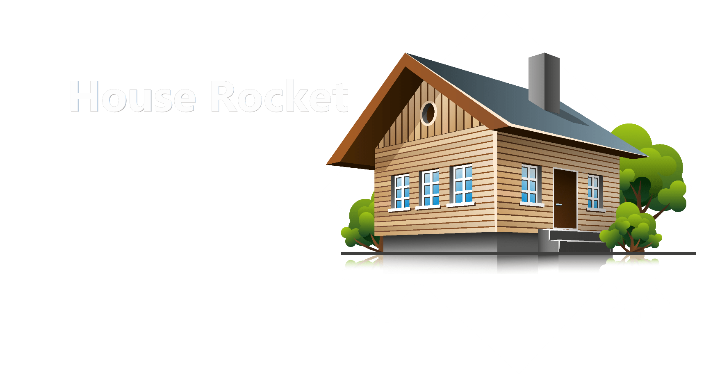
O CEO da House Rocket queria de alguma forma visualizar todo o seu portfólio de forma mais descritiva, com mapas e com seu smartphone para tomar as melhores decisões, a House Rocket é uma imobiliária em Seatle, mais precisamente com um modelo de negócio do tipo ibuyer.
O projeto consiste em uma solução de inteligẽncia de negócio, assim o CEO consegue ter as respostas para suas perguntas e um dashboard de métricas dos seus portfólios.
Ferramentas:
- Docker;
- Julia;
- Heroku;
- Streamlit;
Projetos de Data Engineering
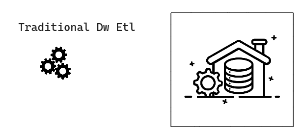
O projeto inspirado em ferramentas como Talend, a ideia era recriar workloads baseados nessas ferramentas com Python e aplicá-las a uma carga de trabalho em batch para alimentar um Dw.
Ferramentas:
- Python;
- Docker;
- Bibliotecas Aio (Async);
Dados são gerados o tempo todo e atualmente, isso acontece com as leis, todos os dias tem órgãos governamentais desenvolvendo e validando novas leis o tempo todo, porém, muitas dessas novas leis elaboradas não tem acesso fácil ou essas informações são desenvolvidas em locais não confiáveis com dificuldade de acesso a algumas instituições interessadas solicitando informações como escolas, empresas, entre outros terceiros que muitas vezes não possuem profissionais capacitados para coletar, transformar e visualizar esses dados de leis com facilidade. Baseado nesse problema, você foi contratado como consultor de Ds para auxiliar na elaboração de um produto de dados que auxilie esses profissionais.
Ferramentas:
- Python;
- Docker;
- Webscraping;
- NLTK
- Elasticsearch;
- Kibana;
- Rundeck;
A Star Jeans é uma empresa onde dois empresários chamados Eduardo e Marcelo são brasileiros e amigos empreendedores que estão iniciando no varejo de moda norte-americano após vários negócios de sucesso. A ideia inicial é entrar no mercado com um produto específico, que é o jeans para o público masculino, mas mesmo com o público bem definido, eles não tem experiência no mercado de varejo de moda, então contrataram uma consultoria de dados para responder algumas questões importantes como qual é o preço otimo inicial, quais as marcas, cores e matéria prima para a confecção dessas peças.
Ferramentas:
- Python;
- Docker;
- Webscraping;
- Mediafire;
- PySimpleGUI;
- Streamlit;
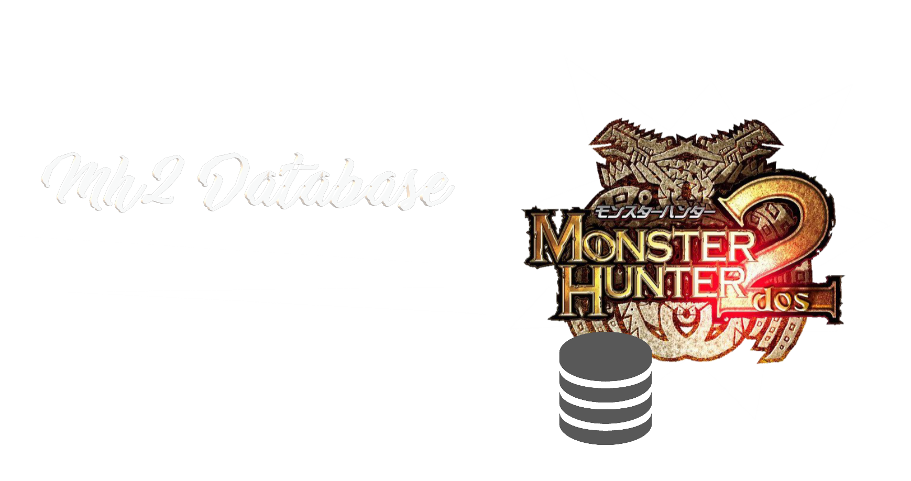
Uma aplicação que facilita o acesso aos dados de Mh2 de forma offline, dado que o game não é muito popular as fontes de dados desse game geralmente são encontradas incompletas ou com atualizações muito velhas, exemplo (2010 Last Update, MH2Dos Wiki Japonesa). Nessa aplicação deve conter o acesso de maneira *offline* a diversas informações sobre o Game, como quests, itens, peças de armadura, etc.
Ferramentas:
- Python;
- MediaFire;
- Webscraping;
- Simple OCR;
- Mediafire;
- PySimpleGUI;
Projetos de Dev
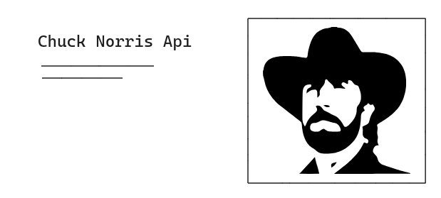
O projeto chuck api tem por principal finalidade estudar e criar uma api utilizando o Python como ferramenta. Como meio de referência e estudos, foi utilizando a API original do "Chuck Norris Jokes".
Foi utilizado a bilioteca Starlette como solução para elaborar o produto de dados, essa biblioteca é um dos cores do Fast Api podendo ser utilizada em diversos workloads como Machine Learning.
Ferramentas:
- Python;
- Docker;
- Render;
- Fast API / Starlette;
- Bootstrap;
Conheci o Pufzilla em um servidor Discord de um jogo, ele é professor de artes/geral e escritor de histórias (crônicas, histórias medievais), mas ele não tem um site ou blog para mostrar seu trabalho de forma "mais forma profissional", ele só compartilha o histórico no Instagram e no Discord, com um blog ele pode postar para o mundo.
Ferramentas:
- Python;
- Django;
- Heroku;
- Pillow;
- Summernote;
- HTML & CSS;
- JQuery;
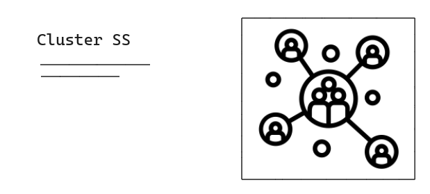
O cluster-ss é um pacote em python simples para facilitar a implementação do treinamento de estimadores de clusterização e calcular a métrica de análise de silhueta.
Ferramentas:
- Python;
- Sklearn;
- Black Format;
- PyPi;
- PyTest;